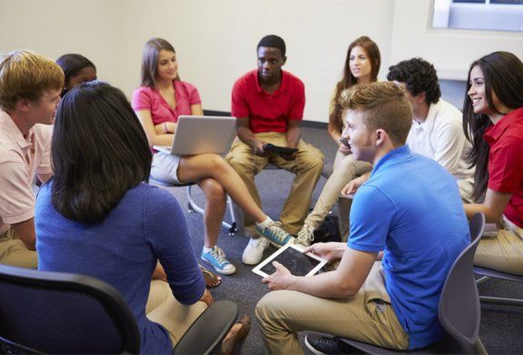

The racial injustices topic is a necessary evil to bring in to the classroom. According to the University of Southern California, children are learning more about the world around them every day, including racial beliefs from those close to them, but they may not understand why these racial beliefs are wrong; instead, they may internalize these beliefs with them, promoting racial injustice. In conclusion of a study conducted in 2010, it was revealed that both white and black children tended to be biased towards whiteness (USC, 2018). That conclusion can also be extended to other races in the United States. For instance, Asian American youths easily assimilate into American society, naturally biased towards whiteness (Dhingra & Rodriguez, 2014, pg. 89). This can be explained with media portrayals of race. For instance, many believe that Hispanics are always economically poor because they are not seen in media commonly as rich. Furthermore, only 2% of children television characters are Latinx while they make up 18% of the US population. Furthermore, as Mariel Buque argues, we would only be proactive if we continually provide youths with information about their racial and ethnic identity, but reactive if we allow negative events to occur (USC, 2018).
GROUP OF ETHNICITIES
Source: Anti-Defamation League
This image depicts students of various ethnicities collaborating together regarding racial injustices.